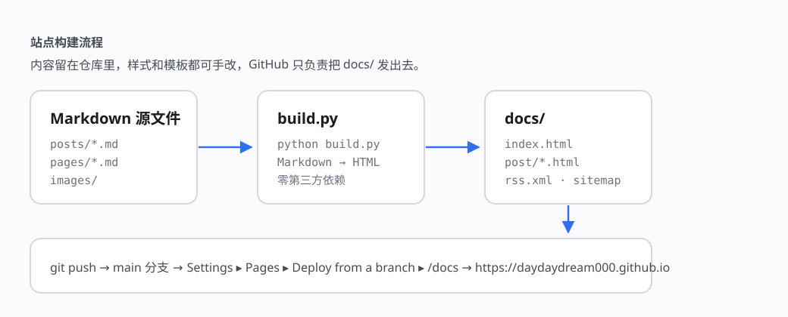

你好，欢迎来到 DayDayDream

这是这个博客的第一篇文章 🎉
在这里，我会记录自己的所思所学——可能是踩过的技术坑、读过的书、随手写下的想法，也可能只是一场白日梦。
你能看到什么
- 📝 随笔与思考：忽然冒出来的念头，趁热记下
- 🛠️ 技术笔记：踩过的坑、绕过的路、顺手写下的小工具
- 📚 读书与生活：读完的书、走过的路，偶尔的碎碎念
这个博客是怎么搭起来的
上一版博客用 Gmeek 搭建：文章写在 GitHub Issues 里，由 Actions 自动拉取仓库生成 HTML。它开箱即用，但版式和结构都交给模板了，想改点什么总隔着一层。
所以这次推倒重来，换回最朴素的做法——整站就是纯静态的 HTML，内容、样式、模板全放在这个仓库里，由 GitHub Pages 直接发布。

具体只有三件事：
- 文章用 Markdown 写在
posts/目录，独立页面放在pages/； - 在本地运行
python build.py，把整站生成到docs/； git push之后，GitHub Pages 自动从main分支的/docs目录发布。
bash
# 写完一篇文章之后
python build.py
git add -A
git commit -m "post: 新文章"
git push目录分工也很直白：
| 路径 | 用途 |
|---|---|
posts/ | 文章源文件（Markdown） |
pages/ | 独立页面，比如「关于」 |
images/ | 文章中引用的图片，构建时自动复制 |
assets/ | 手写的 CSS 与 JavaScript |
templates/ | 页面模板 |
docs/ | 生成结果，也是 Pages 的发布目录 |
提示
生成器只用 Python 标准库，没有第三方依赖；换台机器 clone 下来就能跑。
写在最后
种一棵树最好的时间是十年前，其次是现在。
开始记录吧，欢迎常来坐坐。